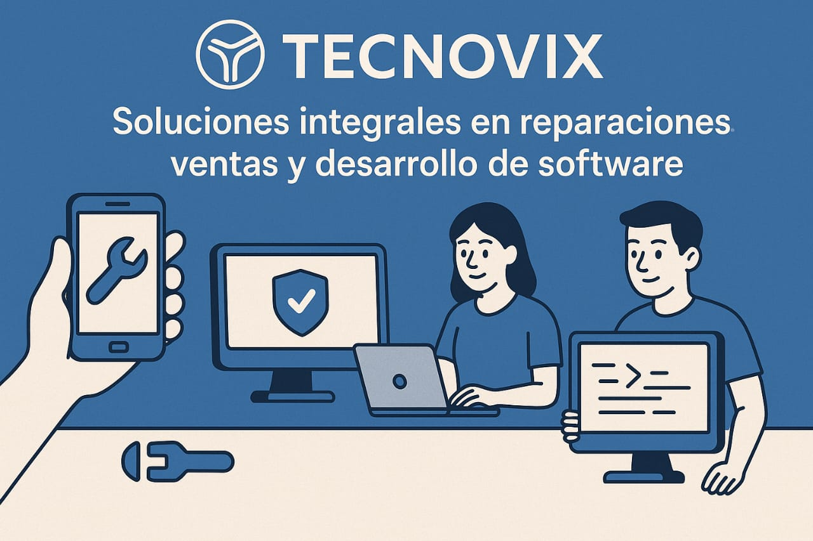
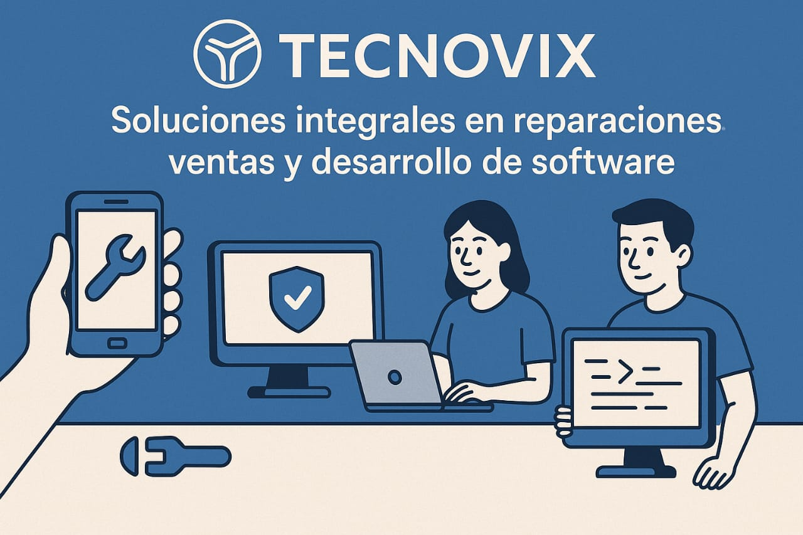

Bienvenido a Tecnovix
Tu aliado tecnológico en reparaciones, ventas y desarrollo de software.
En Tecnovix nos dedicamos a ofrecer soluciones integrales que cubren todas tus necesidades tecnológicas. Ya sea que necesites reparar tus dispositivos electrónicos, adquirir productos de calidad o desarrollar un software a la medida de tu negocio, estamos aquí para ayudarte con profesionalismo y compromiso.
Nuestra misión es facilitar tu vida y potenciar tu crecimiento mediante tecnología confiable y adaptada a tus objetivos. Contamos con un equipo especializado que combina experiencia y pasión por la innovación para brindarte un servicio rápido, eficiente y personalizado.
Confía en Tecnovix para mantener tus dispositivos en óptimas condiciones, renovar tu equipo con productos garantizados y transformar tus ideas en soluciones digitales efectivas. Juntos haremos que la tecnología trabaje a tu favor.

 

Nuestros Servicios
Celulares
Cambio de pantalla, batería, software, desbloqueo y más.
Computadoras
Mantenimiento, formateo, upgrades, limpieza y soporte técnico.
Impresoras
Revisión, limpieza, instalación y reparación de fallas comunes.
Software
Desarrollo de páginas web, apps, sistemas administrativos y más.
Tienda Electrónica

Bocina Bluetooth Portátil 3"
Altavoz Bluetooth portátil con sonido 360°, luces RGB y batería de larga duración. Ideal para música en exteriores y viajes.
$250.00 MXN

Audifono Manos Libres 1hora Aut123
El modelo AUT123 tiene conector 3.5 mm, compatible con smartphones, tablets, laptops y más. Su diseño ergonómico garantiza comodidad y ajuste seguro para uso prolongado.
$100.00 MXN
Auriculares A6S TWS Inalámbricos Bluetooth 5,0
Auriculares A6S TWS con Bluetooth 5.0, sonido nítido, conexión estable y diseño cómodo. Ideales para uso diario sin cables.
$150.00 MXN

Auriculares inalámbricos Bluetooth
Air31 Max-auriculares inalámbricos con Bluetooth, cascos binaurales pequeños, estéreo, graves, TWS, deportivos
$150.00 MXN
Sobre mí
Soy Jesús Antonio Rivera Zavalza, Ingeniero en Software dedicado a crear soluciones tecnológicas personalizadas que impulsan el crecimiento de empresas y proyectos personales. Mi formación y pasión por la tecnología me permiten abordar retos en hardware, redes, programación y desarrollo de software con un enfoque integral y detallado.
Creo firmemente en la importancia de entender a fondo las necesidades de cada cliente para diseñar herramientas y servicios que realmente aporten valor. Más allá de entregar un producto, me enfoco en construir relaciones de confianza mediante una comunicación clara, atención personalizada y un compromiso constante con la calidad.
Mi objetivo es facilitar que las personas y negocios aprovechen al máximo las oportunidades que brinda la tecnología, simplificando procesos y optimizando recursos. Desde la reparación profesional de dispositivos electrónicos hasta el desarrollo de páginas web y software a medida, busco siempre ofrecer soluciones innovadoras, eficientes y adaptadas a cada contexto.
Estoy convencido de que la tecnología debe ser una aliada accesible y efectiva para todos, por eso trabajo con dedicación para que cada proyecto sea un éxito, combinando conocimiento técnico con creatividad y una actitud orientada a resultados.
Contáctanos
Puedes contactarnos por: